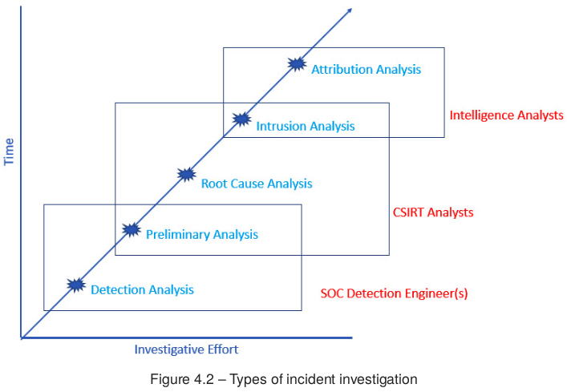
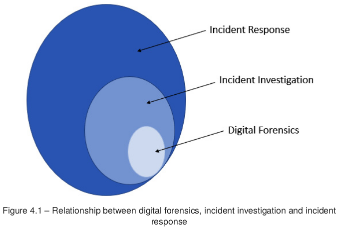
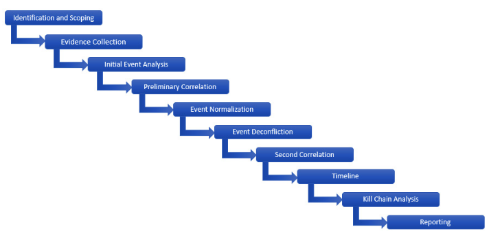
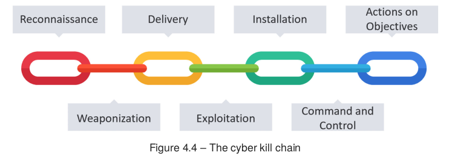
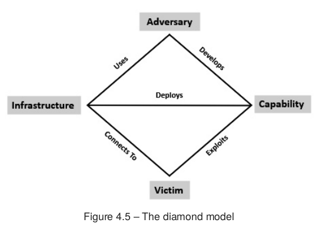

3.3.2.-Investigación de incidentes
3.3.2. Investigación de incidentes de ciberseguridad¶
Detectar una alerta no equivale a entender un incidente. La investigación empieza cuando el equipo necesita responder con criterio a preguntas como estas: qué ha pasado, cómo ha pasado, qué alcance tiene, qué impacto ha tenido y qué hay que cambiar para que no vuelva a ocurrir.
En esta parte del tema vamos a centrarnos en cómo se organiza esa investigación. La idea principal es sencilla: no se investiga “a ver qué sale”, sino para confirmar o descartar una hipótesis a partir de evidencias.
Este tema está directamente alineado con el RA 3: - c) se ha realizado la investigación de incidentes de ciberseguridad.
Definición
La investigación de incidentes es el proceso ordenado mediante el cual se formula una hipótesis, se recopilan evidencias digitales, se correlacionan los hechos y se obtiene una explicación técnica útil para responder al incidente.
1. Para qué sirve investigar un incidente¶
Una investigación bien hecha no se limita a señalar “el equipo infectado” o “el fichero malicioso”. Su finalidad real es mucho más amplia:
- delimitar el alcance, para saber qué sistemas, cuentas o servicios están implicados;
- identificar la causa raíz, es decir, la vía de entrada o el fallo que ha permitido el incidente;
- reconstruir la secuencia de hechos, desde el acceso inicial hasta el impacto final;
- extraer indicadores y TTP, útiles para contener, buscar más casos y mejorar la defensa;
- documentar conclusiones y recomendaciones, de forma que la organización pueda actuar con criterio.
Idea importante
Investigar no es una tarea separada de la respuesta al incidente. Sirve para orientar la contención, apoyar la erradicación y justificar las decisiones técnicas.
2. Tipos de análisis de investigación de incidentes¶
No todas las investigaciones tienen la misma profundidad. En la práctica, el tipo de análisis depende del impacto del incidente, del tiempo disponible, de la evidencia que exista y de los recursos del equipo.
Podemos distinguir cinco niveles habituales:
| Tipo de análisis | Objetivo principal | Resultado esperado |
|---|---|---|
| Análisis de detección | Confirmar si una alerta realmente apunta a un incidente | Validar o descartar el evento |
| Análisis preliminar | Obtener visibilidad rápida sobre alcance e impacto inicial | Decidir si hay que escalar y contener |
| Análisis de causa raíz | Explicar cómo empezó el incidente y qué hizo posible el compromiso | Corregir fallos y reducir riesgo futuro |
| Análisis de intrusión | Reconstruir con detalle el comportamiento del adversario | Entender TTP, fases y objetivos del ataque |
| Análisis de atribución | Relacionar la intrusión con un actor concreto | Inteligencia de amenazas avanzada |

Conviene entender bien qué aporta cada uno:
2.1. Análisis de detección¶
Es el análisis más básico. Suele empezar con una alerta del SIEM, del EDR, del antivirus o de otra fuente de telemetría. Su objetivo no es explicarlo todo, sino responder a una pregunta muy concreta: ¿esto es un falso positivo o puede ser un incidente real?
2.2. Análisis preliminar¶
Cuando el incidente todavía es ambiguo, el equipo necesita una visión rápida de lo esencial: qué equipo está afectado, si hay persistencia, si existe movimiento lateral o si el impacto podría extenderse. Este análisis ayuda a ganar tiempo para contener sin trabajar completamente a ciegas.
2.3. Análisis de causa raíz¶
Aquí la pregunta principal es: ¿cómo ha entrado el atacante y qué ha hecho? Es un análisis muy útil porque permite corregir la debilidad que ha hecho posible el incidente: una mala configuración, una credencial expuesta, un servicio vulnerable o un correo de phishing, por ejemplo.
2.4. Análisis de intrusión¶
Va más allá de la causa raíz. Intenta reconstruir la intrusión completa y entender el comportamiento del adversario: qué infraestructura ha usado, qué capacidades ha desplegado, qué objetivo perseguía y cómo ha ido avanzando por el entorno. Es un análisis más lento y exigente, pero también mucho más rico.
2.5. Análisis de atribución¶
Es el nivel más complejo. Su meta es vincular la intrusión con un grupo o actor concreto. En entornos normales no suele ser responsabilidad directa del CSIRT, porque requiere mucho tiempo, grandes volúmenes de datos y apoyo de inteligencia de amenazas.
Qué debes recordar
En una organización corriente, lo más habitual es trabajar sobre detección, análisis preliminar, causa raíz y análisis de intrusión. La atribución suele quedar para equipos especializados.
3. Metodología funcional de informática forense digital¶
Una investigación útil necesita un método. Si el equipo revisa datos sin orden, mezcla hipótesis con conclusiones o no documenta lo que hace, el resultado será confuso incluso aunque haya encontrado evidencias valiosas.
La idea central de la metodología funcional de informática forense digital es esta: partir de una hipótesis y ponerla a prueba con evidencias.
Por ejemplo, una hipótesis inicial podría ser:
- el acceso inicial se produjo por un correo de phishing;
- el atacante entró mediante credenciales robadas;
- se explotó un servicio expuesto a internet;
- o se reutilizó una cuenta comprometida para acceder por VPN.
La hipótesis sirve para orientar la investigación, pero no es la conclusión. Si la evidencia no la sostiene, debe cambiarse.
Ejemplo
Si sospechas que la infección empezó por phishing, tendrás que revisar el correo original, sus cabeceras, los enlaces o adjuntos, la actividad del equipo, los procesos ejecutados y las conexiones posteriores. Si los datos apuntan a otra vía de entrada, la hipótesis inicial debe descartarse.
3.1. Las 10 fases de trabajo¶
Una forma práctica de organizar la investigación es seguir estas diez fases:
- Identificación y delimitación del alcance.
- Recopilación de evidencia.
- Análisis inicial de eventos.
- Correlación preliminar.
- Normalización de eventos.
- Desconflicción de eventos.
- Segunda correlación.
- Construcción de la línea temporal.
- Análisis con cadena de ataque y otros modelos.
- Elaboración del informe.

Veamos qué aporta cada fase:
3.2. Identificación y delimitación del alcance¶
La investigación empieza cuando una alerta o una comunicación humana indica que puede haber un incidente. Aquí se busca responder a dos preguntas:
- qué ha activado la investigación;
- qué activos podrían estar implicados.
Delimitar bien el alcance evita perder tiempo analizando sistemas que no tienen relación con el caso.
3.3. Recopilación de evidencia¶
Una vez delimitado el incidente, toca reunir evidencias. En este punto es clave tener presente la volatilidad: memoria, procesos, conexiones activas o logs de corta retención pueden desaparecer rápidamente.
Entre las fuentes más habituales están:
- logs del sistema operativo;
- telemetría de EDR, antivirus o SIEM;
- registros de firewall, proxy, DNS y correo;
- artefactos del sistema de ficheros;
- tareas programadas, servicios, procesos y claves de persistencia.
3.4. Análisis inicial de eventos¶
En esta fase se revisan los datos para localizar eventos sospechosos e indicadores relevantes. Normalmente aparecen tres tipos de indicadores:
- atómicos, como una IP, un dominio o una dirección de correo;
- computacionales, como un hash o una firma;
- de comportamiento, como una secuencia de acciones que dibuja una técnica.
Todavía puede haber falsos positivos. El objetivo aquí no es cerrar el caso, sino separar lo que merece atención de lo que probablemente no la merece.
3.5. Correlación preliminar¶
La correlación consiste en unir hechos que, por separado, dicen poco, pero juntos explican mejor lo ocurrido. Por ejemplo:
- el correo deja rastro en el servidor de correo;
- la apertura del adjunto deja rastro en el endpoint;
- el payload deja rastro en el EDR;
- y la conexión al exterior aparece en proxy, DNS o firewall.
Cuando esos datos se encajan en la misma secuencia, la investigación gana valor.
3.6. Normalización y desconflicción¶
Normalizar significa describir los eventos con una sintaxis coherente. Aquí resultan útiles marcos como MITRE ATT&CK, porque permiten expresar el comportamiento observado con un vocabulario común.
Desconflictuar significa eliminar ruido, duplicidades o contradicciones. No todo lo sospechoso es malicioso, y no todo lo repetido aporta más evidencia.
3.7. Segunda correlación y línea temporal¶
Una vez depurados los datos, el analista vuelve a correlacionarlos para construir una línea temporal sólida. La cronología es esencial porque ayuda a responder preguntas como estas:
- qué ocurrió primero;
- qué acciones vinieron después;
- cuánto tiempo estuvo activo el atacante;
- y en qué momento se produjo el impacto principal.
3.8. Análisis con marcos de intrusión¶
Llegados a este punto, ya no basta con tener eventos ordenados. Ahora hace falta darles contexto. Para eso se usan modelos como:
- la Cyber Kill Chain, que sitúa cada acción dentro de una fase del ataque;
- el modelo de diamante, que relaciona adversario, capacidad, infraestructura y víctima.
3.9. Elaboración del informe¶
La investigación termina cuando se puede explicar el incidente con claridad. Un buen informe técnico debería dejar claro:
- qué ha ocurrido;
- cómo se produjo;
- qué activos se vieron afectados;
- qué evidencias sostienen las conclusiones;
- y qué medidas deben aplicarse después.
Error frecuente
Un equipo puede hacer un análisis técnico correcto y perder gran parte de su valor si documenta tarde, documenta mal o no deja claras las evidencias que sostienen sus conclusiones.
4. La cadena de ciberataque (Cyber Kill Chain)¶
La línea temporal nos dice en qué orden ocurrieron los hechos, pero no siempre explica en qué fase del ataque se encontraba el adversario. Para eso resulta útil la Cyber Kill Chain, un modelo que organiza la intrusión en siete fases.

Las siete fases son estas:
| Fase | Qué hace el adversario | Qué interesa al analista |
|---|---|---|
| Reconocimiento | Reúne información sobre la víctima | Detectar huellas previas, exposición y preparación del ataque |
| Armamentización | Prepara malware, exploit o documento malicioso | Entender la capacidad que se ha construido |
| Entrega | Hace llegar la carga al objetivo | Identificar el vector: correo, web, USB, descarga, etc. |
| Explotación | Aprovecha una vulnerabilidad técnica o humana | Confirmar cómo se produjo el compromiso inicial |
| Instalación | Establece persistencia | Localizar artefactos, cambios de sistema o puertas traseras |
| Mando y control | Abre un canal para controlar el sistema | Encontrar comunicaciones C2 y su infraestructura |
| Acciones sobre los objetivos | Ejecuta el objetivo final | Medir impacto real: robo, cifrado, sabotaje, fraude, espionaje |
4.1. Qué aporta este modelo¶
La cadena de ataque es útil porque ayuda a entender que una intrusión no es un hecho aislado, sino una secuencia de pasos. Si el equipo identifica en qué fase está el adversario, puede orientar mejor la investigación y la respuesta.
Por ejemplo:
- si estamos viendo Entrega, interesa revisar correo, URLs o adjuntos;
- si estamos viendo Instalación, habrá que buscar persistencia;
- si estamos viendo Mando y control, habrá que estudiar tráfico de red, dominios e infraestructura externa.
4.2. Un ejemplo sencillo¶
En una campaña de phishing, la secuencia podría ser esta:
- El atacante identifica a una persona de la organización.
- Prepara un correo con un documento malicioso.
- Entrega ese correo.
- La víctima abre el adjunto y se explota una vulnerabilidad o una macro.
- Se instala un payload con persistencia.
- El equipo contacta con un servidor C2.
- El atacante roba credenciales o despliega ransomware.
Qué debes recordar
La cadena de ciberataque no sustituye a la evidencia. Sirve para dar contexto a la evidencia y entender qué parte del ataque estamos viendo.
5. El modelo de diamante del análisis de intrusiones¶
La Cyber Kill Chain explica la secuencia del ataque, pero no muestra bien la relación entre los distintos elementos que intervienen. Para eso es muy útil el modelo de diamante, que representa la intrusión como la relación entre cuatro vértices:
- Adversario.
- Capacidad.
- Infraestructura.
- Víctima.

5.1. Qué significa cada vértice¶
Adversario
Es la persona, grupo u organización que impulsa la intrusión. No siempre podrá identificarse con nombre y apellidos, pero sí pueden encontrarse rasgos de su forma de operar.
Capacidad
Son las herramientas, técnicas y procedimientos que utiliza para avanzar. Puede ser un malware, una web shell, un documento armado, un script o una técnica de phishing.
Infraestructura
Es el soporte técnico que hace posible el ataque: dominios, direcciones IP, servidores C2, servicios en la nube o sitios preparados para entregar malware.
Víctima
Es la persona, equipo, servicio u organización contra la que se dirige la intrusión. Puede analizarse tanto desde el punto de vista humano como desde el punto de vista técnico.
5.2. Cómo se relacionan los vértices¶
El valor del modelo no está solo en nombrar cuatro elementos, sino en mostrar su relación. El adversario desarrolla o utiliza una capacidad, la despliega sobre una infraestructura y la dirige contra una víctima.

Este enfoque ayuda a transformar datos sueltos en preguntas de análisis más útiles:
- ¿qué capacidad ha utilizado el atacante?;
- ¿qué infraestructura la soporta?;
- ¿a qué víctima se ha dirigido?;
- ¿qué relación existe entre esos elementos?;
- ¿qué puede deducirse del objetivo perseguido?
5.3. Por qué es útil en la práctica¶
Supongamos que durante la investigación aparecen estos datos:
- un dominio sospechoso;
- una web shell subida a un servidor;
- una cuenta de usuario concreta comprometida;
- y un patrón de comandos repetido.
Si se observan por separado, son datos interesantes. Si se sitúan dentro del modelo de diamante, el análisis mejora mucho más:
- el dominio encaja como infraestructura;
- la web shell y los comandos encajan como capacidad;
- la cuenta comprometida y el sistema afectado encajan como víctima;
- y el conjunto apunta a un mismo adversario o a una misma forma de operar.
Matiz importante
No toda herramienta legítima es, por sí sola, una capacidad maliciosa. Por
ejemplo, PowerShell no es malicioso por definición; lo relevante es cómo
se usa, con qué objetivo y en qué contexto aparece.
6. Combinar la cadena de ataque y el modelo de diamante¶
Estos dos modelos no compiten entre sí. De hecho, se complementan muy bien:
- la Cyber Kill Chain ayuda a responder en qué fase está el ataque;
- el modelo de diamante ayuda a responder qué elementos intervienen y cómo se relacionan.
Aplicados juntos, permiten un análisis más completo. Por ejemplo, en la fase de Entrega de una campaña de phishing podríamos situar:
- como capacidad, el documento malicioso o la URL armada;
- como infraestructura, el dominio o servidor desde el que se sirve la carga;
- como víctima, la persona usuaria o el equipo que recibe el correo;
- y como adversario, el grupo o actor que está detrás de la campaña.
Después, en la fase de Instalación o Mando y control, el mismo análisis puede repetirse con nuevas evidencias: otra capacidad, otra infraestructura o una ampliación del alcance sobre más víctimas.
7. Ejemplo aplicado: investigación guiada de un incidente de phishing¶
La mejor forma de comprobar que la metodología tiene sentido es aplicarla a un caso concreto. A partir del ejemplo de phishing del material de apoyo, vamos a recorrer una investigación sencilla como lo haría un equipo técnico.
7.1. Escenario e hipótesis inicial¶
Una persona usuaria comunica que ha recibido un correo aparentemente legítimo del banco o de un servicio interno, ha abierto el mensaje y ha pulsado un enlace o ha descargado un adjunto. Poco después, el equipo muestra actividad anómala o el SOC detecta tráfico sospechoso.
La hipótesis inicial podría formularse así:
El incidente comenzó con un correo de phishing que consiguió engañar a la víctima y activó una carga maliciosa o el robo de credenciales.
Esta hipótesis todavía no demuestra nada. Solo marca la dirección inicial de la investigación.
Pistas iniciales que justifican la hipótesis
Algunas señales típicas de phishing son:
- errores ortográficos o mensajes redactados con poca naturalidad;
- dominio del remitente distinto del habitual;
- enlaces cuyo destino real no coincide con el texto visible;
- sensación de urgencia o petición de datos confidenciales;
- adjuntos inesperados.
7.2. Aplicación de la metodología paso a paso¶
En este caso, la metodología explicada antes puede aplicarse así:
| Fase de la investigación | Aplicación al caso de phishing |
|---|---|
| Identificación y alcance | Confirmar qué persona recibió el mensaje, en qué equipo lo abrió y si hay más destinatarios afectados. |
| Recopilación de evidencia | Obtener el mensaje original, sus cabeceras, enlaces, adjuntos, eventos del endpoint y registros de correo, proxy, DNS o firewall. |
| Análisis inicial | Detectar dominios sospechosos, fallos en SPF/DKIM/DMARC, macros, scripts, descargas o procesos anómalos. |
| Correlación preliminar | Relacionar el correo con la ejecución en el equipo y con las comunicaciones posteriores hacia internet. |
| Normalización y desconflicción | Describir el comportamiento con un lenguaje común, por ejemplo mediante MITRE ATT&CK, y separar ruido de evidencia útil. |
| Línea temporal | Ordenar llegada del correo, apertura, clic o ejecución, descarga, persistencia y conexiones externas. |
| Análisis con marcos | Situar la evidencia en la Cyber Kill Chain y en el modelo de diamante para entender mejor la intrusión. |
| Informe | Explicar causa raíz, alcance, indicadores observados y medidas de contención o mejora. |
7.3. Obtención del mensaje original y análisis de cabeceras¶
El primer paso técnico útil es obtener el mensaje original y no quedarse solo con lo que muestra la interfaz del cliente de correo. Lo importante aquí es conservar:
- el remitente visible y el remitente real;
- la dirección de retorno;
- los servidores por los que ha pasado el mensaje;
- el resultado de controles como SPF, DKIM y DMARC;
- los enlaces incluidos en el cuerpo del correo;
- y los ficheros adjuntos, si existen.
Una cabecera simplificada podría contener pistas como estas:
From: "Soporte bancario" <avisos@banc0-seguro.com>
Return-Path: <envio@mailer-check-security.com>
Reply-To: ayuda@banc0-seguro.com
Received-SPF: fail
Authentication-Results: dmarc=fail; spf=fail; dkim=none
Si el dominio visible se parece al legítimo pero no coincide, si la dirección de retorno es distinta o si fallan los mecanismos de autenticación, la hipótesis de phishing gana fuerza.
7.4. Revisión de enlaces, adjuntos y actividad del equipo¶
Una vez obtenidos los metadatos del mensaje, toca revisar los elementos que podrían haber activado el incidente.
Si el correo contiene enlaces, conviene comprobar:
- el destino real de la URL;
- si existen redirecciones o acortadores;
- la reputación del dominio;
- y si ese dominio aparece también en proxy, DNS o firewall.
Si el correo contiene adjuntos, el análisis debe hacerse en un entorno controlado. Interesa averiguar si el fichero:
- ejecuta macros o scripts;
- descarga una segunda carga;
- crea persistencia;
- o provoca tráfico hacia infraestructura externa.
En paralelo, hay que revisar el endpoint para comprobar si aparecen huellas como estas:
- ejecución de
powershell.exe,wscript.exeo procesos equivalentes; - creación de tareas programadas;
- cambios en claves de persistencia;
- descargas de nuevos binarios;
- conexiones salientes anómalas.
7.5. Correlación y línea temporal del incidente¶
Cuando las evidencias del correo, del endpoint y de la red encajan, ya puede construirse una secuencia razonable de hechos. Un ejemplo sencillo sería este:
- A las 09:14 llega el correo al buzón de la víctima.
- A las 09:17 la víctima abre el mensaje.
- A las 09:18 pulsa un enlace o abre un adjunto.
- A las 09:18:30 el equipo resuelve un dominio no habitual.
- A las 09:19 se ejecuta un proceso sospechoso.
- A las 09:20 aparece una conexión hacia infraestructura externa.
Esta línea temporal permite pasar de una sospecha genérica a una explicación técnica con evidencias encadenadas.
Qué aporta la correlación
El correo por sí solo no siempre demuestra el incidente. El valor aparece cuando se relaciona con la actividad del equipo y con la telemetría de red.
7.6. Lectura del caso con la Cyber Kill Chain¶
En este ejemplo, la secuencia puede interpretarse así:
- Reconocimiento: el atacante selecciona a la víctima y prepara el engaño.
- Armamentización: crea la URL maliciosa o el documento armado.
- Entrega: el correo llega al buzón.
- Explotación: la víctima pulsa el enlace o habilita una macro.
- Instalación: se descarga o activa una carga con persistencia.
- Mando y control: el equipo contacta con infraestructura externa.
- Acciones sobre los objetivos: robo de credenciales, descarga adicional o preparación de un impacto mayor.
La utilidad de este análisis es clara: permite saber en qué fase se detectó el incidente y qué evidencias faltan todavía por buscar.
7.7. Lectura del caso con el modelo de diamante¶
El mismo caso también puede expresarse con el modelo de diamante:
- Adversario: actor o campaña que envía el correo fraudulento.
- Capacidad: enlace malicioso, adjunto armado o script ejecutado.
- Infraestructura: dominio de envío, servidor web fraudulento o C2.
- Víctima: persona usuaria engañada y equipo comprometido.
Visto así, el análisis no se limita a decir “hubo un correo sospechoso”, sino que permite relacionar quién ataca, qué usa, dónde lo aloja y contra quién lo dirige.
7.8. Qué debería recoger el informe final¶
Si este caso llegara a informe, el documento debería recoger al menos:
- la hipótesis inicial y cómo se confirmó o descartó;
- las evidencias principales obtenidas del correo, del endpoint y de la red;
- la línea temporal del incidente;
- la causa raíz, por ejemplo apertura de un enlace o adjunto malicioso;
- el alcance, indicando si hubo más destinatarios o más equipos;
- y las medidas recomendadas, como bloqueo de dominios, reseteo de credenciales, refuerzo de filtrado o concienciación.
Qué debe aprender el alumnado de este ejemplo
Investigar un phishing no consiste solo en decir que “el correo era falso”. Consiste en demostrar técnicamente cómo llegó, qué activó, qué evidencias dejó y cómo se conecta todo dentro de una intrusión real.
8. Ideas clave para estudio¶
- Investigar un incidente significa convertir evidencias dispersas en una explicación técnica coherente.
- No todas las investigaciones requieren la misma profundidad: hay análisis de detección, preliminar, causa raíz, intrusión y atribución.
- La metodología funcional de informática forense digital se basa en formular hipótesis y contrastarlas con evidencias.
- La Cyber Kill Chain ayuda a entender la secuencia del ataque.
- El modelo de diamante ayuda a relacionar adversario, capacidad, infraestructura y víctima.
- Usar ambos modelos a la vez mejora la capacidad del analista para interpretar lo ocurrido y comunicarlo con claridad.
Idea final
Una investigación útil no se basa en intuiciones ni en revisar logs sin rumbo. Se basa en método, evidencias, contexto y capacidad para explicar técnicamente lo ocurrido.